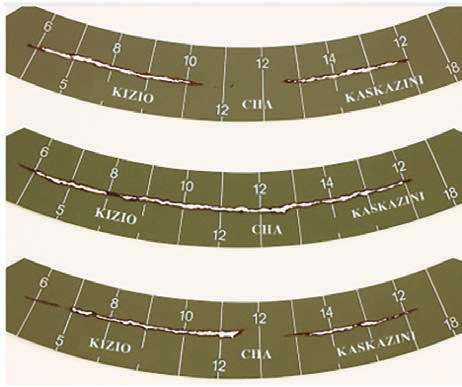

Hatua za kufuata wakati wa kupima mwanga wa jua
Weka kipimamwanga wa jua nje mahali palipo wazi ambapo mwanga wa jua unaweza kuangaza moja kwa moja juu yake. Hakikisha hakuna miti au majengo yanayozuia mwanga wa jua kufikia kipimamwanga wa jua.
Hakikisha tufe limegeukia mahali sahihi ili mwanga wa jua uweze kupita.
Mwanga wa jua utachoma kadi ya kurekodi. Hii itaonesha ni muda gani jua lilikuwa linaangaza.
Angalia kadi kuona alama. Kila alama inaonesha ni muda gani jua limeangaza.
Kadiri jua linavyoangaza kwa muda mrefu, ndivyo alama ya kuchomwa inavyoongezeka na kuwa ndefu kwenye kadi.
Unaweza kuhesabu alama ili kuona ni kiasi gani cha muda ambao mwanga wa jua umeonekana siku hiyo; tazama Kielelezo namba 9.
Baada ya kuitumia, safisha tufe ili ifanye kazi vizuri wakati ujao.

Mawingu
Mawingu ni mkusanyiko wa matone madogomadogo ya maji au barafu yanayoelea angani. Mawingu yanaundwa kutokana na hewa yenye mvuke inayosababishwa na uvukishaji kutoka kwenye mimea, bahari na vyanzo mbalimbali vya maji. Baada ya hewa yenye mvuke kupanda katika angahewa, hukutana na baridi inayoupoza, kisha huganda na kutengeneza matone madogo madogo ya maji angani.